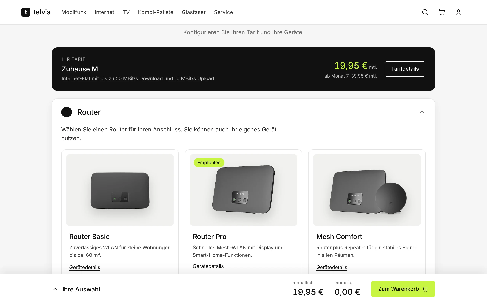
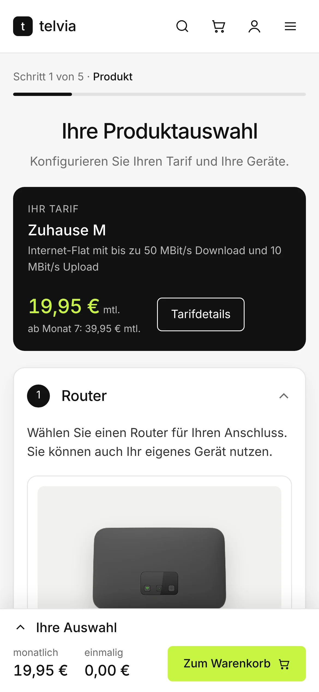
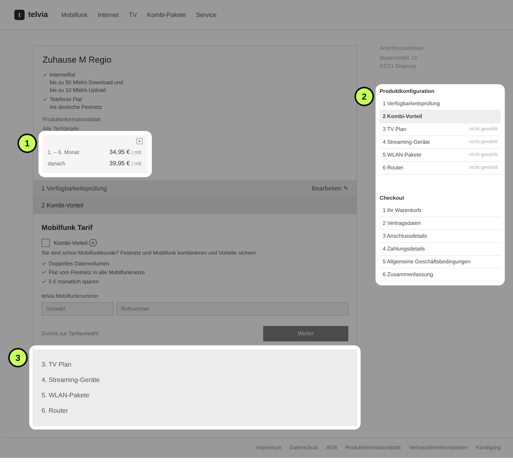
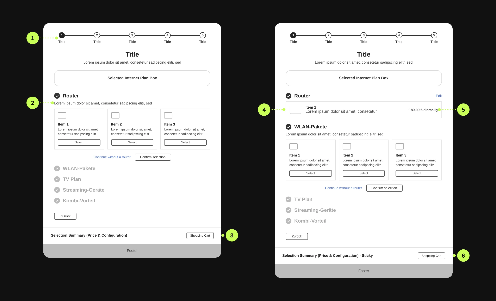
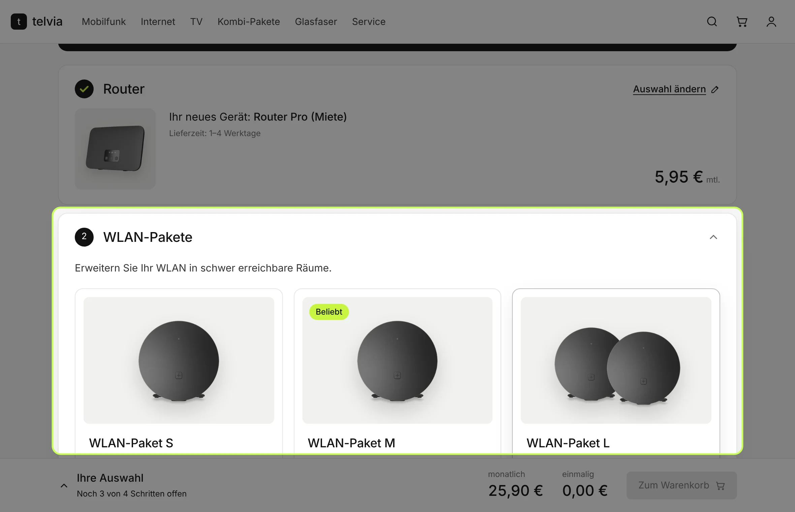
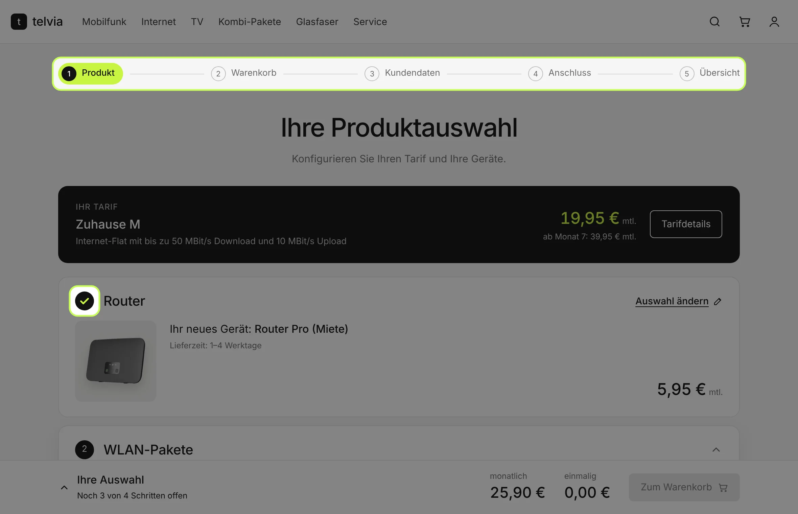
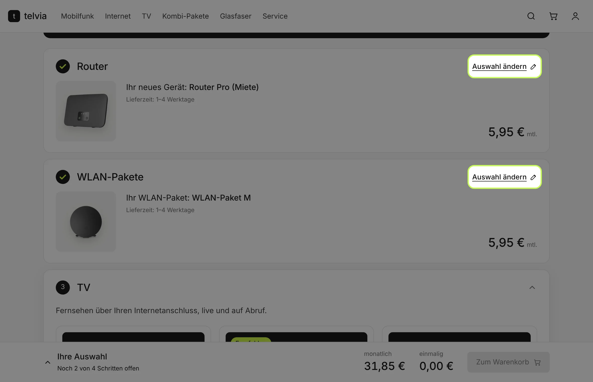
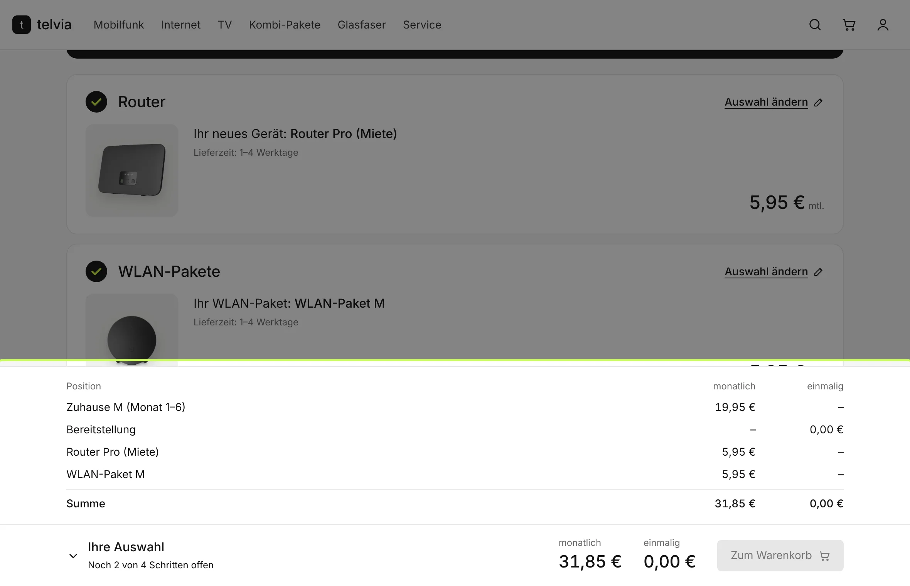

From Friction
to Flow
I redesigned the product configurator of a large European telecom provider. The old flow showed every decision at once. The new one guides customers through one decision at a time, with clear prices and visible progress.
White-labeled case study. Client screens are recreated under the brand "telvia".


A configurator losing customers at every step
The old configurator showed the tariff, every configuration step and every checkout step on one crowded screen. There was no clear progress indicator, prices were hard to follow, and changing an earlier choice was difficult. Many people gave up or called support.
Customer, before"I see too many options at once. I'm not sure what things cost or what comes next, so I give up or call support."
Lost sales
Customers dropped off before checkout.
Weaker campaigns
Paid traffic landed on a page that did not convert.
Support costs
Confused customers needed help to finish simple orders.
Two goals, three phases
More completed orders
A clear, transparent flow that builds confidence at the point of purchase.
Healthy cross-selling
Add-ons shown as optional, useful choices, never as pressure.
Evaluation and insight
Find where and why people struggle.
Concept
Turn the findings into a modular flow and test it with the client.
Design and delivery
Build, refine with the client, and hand off to engineering.
What was wrong with the old flow
A heuristic evaluation, a Gestalt review and a quick internal test all pointed to the same three problems.

- 1
Prices hidden in a small box
The monthly price and the price after month 6 sat in a collapsed box, away from the choices that changed them.
- 2
Two step lists that look the same
Configuration and checkout steps sat side by side. Users could not tell where they were.
- 3
No sense of progress
The remaining steps were listed under the form, with no indication of how much was left.
From one crowded page to modules
I broke the page into modules, one per product type, and validated the flow with the client before any visual design.

- 1
Progress flow
A stepper shows where people are.
- 2
Modular configurator
One module per product type, one open at a time.
- 3
Transparent pricing
A summary of price and configuration.
- 4
Visual and contextual support
A finished module shows the chosen product.
- 5
Information clarity
Price and "Edit" stay next to each choice.
- 6
Streamlined checkout
The summary stays sticky, with a direct way to the cart.
Modular configurator
The client approved the step-by-step approach.
Mostly sequential flow
Steps stay in a fixed order to support cross-selling. Customers can still skip ahead with "Zum Warenkorb".
Progress indicator
It keeps people oriented, especially through steps they cannot skip.
One decision at a time




Customer, after"I go step by step, always see my progress and my total, and can change anything before I order."
What the client's review changed
After the prototype, the client reviewed every screen. Their comments led directly to these changes. Names are hidden.
Two user journeys
The availability check separates new customers and switchers, so contract data shows correctly for each.
Reduced header and footer
Keeps the brand without menu distractions inside the configurator.
Product counters
Products that can be booked more than once got quantity counters.
Clearer skip option
The final module got a more visible way to skip, which reduces friction.
Try the redesigned flow
The prototype runs right here. Switch between desktop, tablet and mobile to see how the layout adapts.
- 1Pick a router
- 2Confirm your choice
- 3Watch the price bar update
What changed
Fewer drop-offs
The client reported a lower abandonment rate and better task completion.
Fewer pricing questions
Transparent pricing got positive feedback and reduced confusion about costs, and with it the need to call support.
Better cross-selling
The client reported a positive lift in mobile add-on attach rates, without pushy patterns.
Exact figures belong to the client and are not public.
Die Links „ohne … fortfahren" sollten als Button visuell sichtbarer gemacht werden.
→ Change 4Aktueller verwendeter reduzierter Header ist akzeptabel.
→ Change 2Es ist auch technisch möglich, mehrere … TV Flex zu buchen.
→ Change 3Deutlicher herausstellen: Abhängigkeit vom Tarif des Kunden.